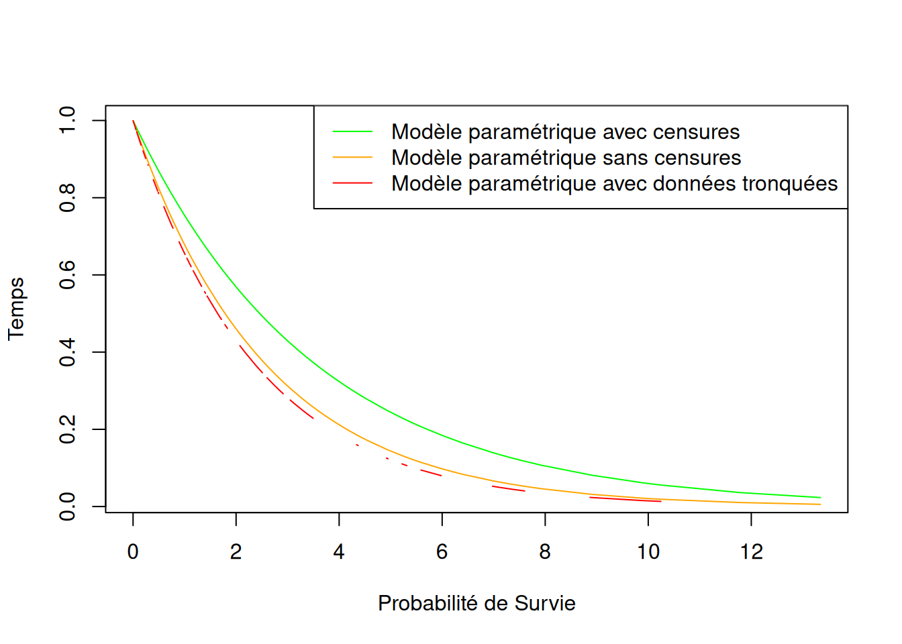
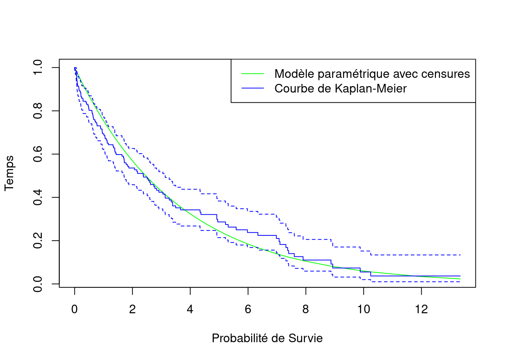
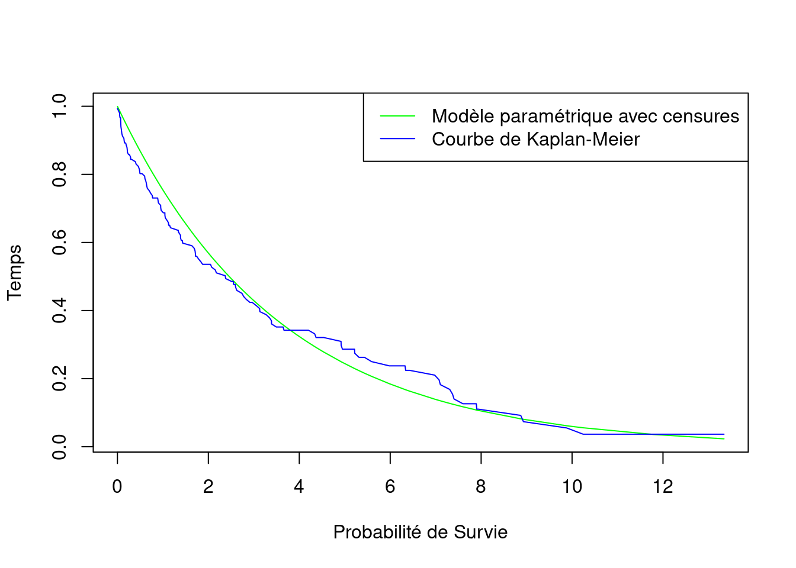
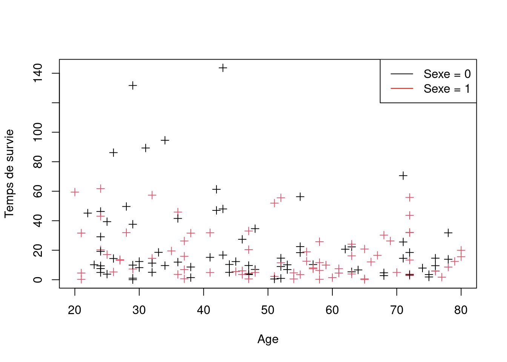
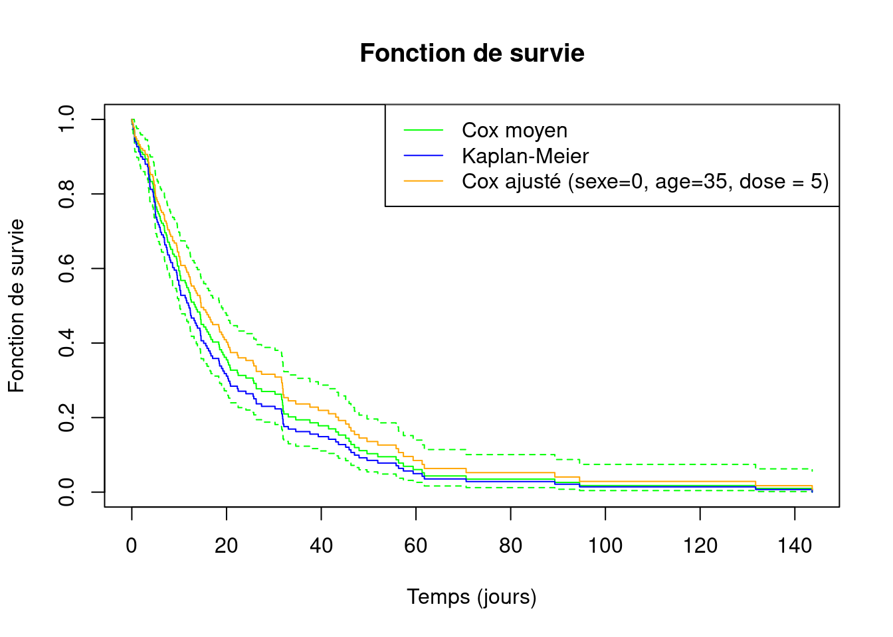

rm(list=ls())Modèles de Survie
Introduction aux modèles de survie
1 Avant de commencer
Réinitialisation de l’environnement
Librairies utiles
library(dplyr)
library(survival)2 Génération des données
- Durées de vie : \(X \sim Exp(0.3)\)
- Censures à droite : \(C \sim Exp(0.1)\)
- Temps d’observation : \(T = min(X,C)\)
set.seed(20)
n <- 150
X <- rexp(n, 0.3) # Temps de survie (Xi)
C <- rexp(n, 0.1) # Temps de censures à droite (Ci)
T <- pmin(X, C) # Temps d'observation (Ti)
data <- data.frame(X, C, T)
# statut de censure (0 : censure à droite, 1 : pas de censure, 2 : censure à gauche)
data$censure <- ifelse(X <= C, 1, 0)
head(data, 10)| X | C | T | censure |
|---|---|---|---|
| 0.6445417 | 1.708531 | 0.6445417 | 1 |
| 0.1944246 | 3.126684 | 0.1944246 | 1 |
| 0.2110231 | 2.196058 | 0.2110231 | 1 |
| 7.3714440 | 10.960311 | 7.3714440 | 1 |
| 3.3450766 | 5.479652 | 3.3450766 | 1 |
| 3.9114845 | 1.356186 | 1.3561858 | 0 |
| 1.4368504 | 4.680558 | 1.4368504 | 1 |
| 1.7186424 | 5.867553 | 1.7186424 | 1 |
| 21.2389967 | 4.111656 | 4.1116558 | 0 |
| 3.2724543 | 34.235329 | 3.2724543 | 1 |
3 Modèles paramétriques
Les fonctions de risque instantané des deux principaux modèles :
- Modèle exponentiel : \(\lambda(t,\ Z)\ =\ \theta\ exp(\beta^T Z)\)
- Modèle de Weibull : \(\lambda(t,\ Z)\ =\ \theta\ \gamma\ (\theta\ t)^{\gamma-1} exp(\beta^T Z)\)
avec \(Z\) : les covariables
3.1 Estimation paramétrique du modèle sans prise en compte des censures
On suppose que toutes les observations sont vraies ie. les censures sont considérées comme des décès
model1 <- survreg(Surv(data$T, rep(1,n)) ~ 1, dist = "exponential")
summary(model1)
Call:
survreg(formula = Surv(data$T, rep(1, n)) ~ 1, dist = "exponential")
Value Std. Error z p
(Intercept) 0.9466 0.0816 11.6 <2e-16
Scale fixed at 1
Exponential distribution
Loglik(model)= -292 Loglik(intercept only)= -292
Number of Newton-Raphson Iterations: 5
n= 150 exp(-model1$coefficients) # Valeur du paramètre de la loi exponentielle estimée(Intercept)
0.3880494 exp(-model1$coefficients) - 0.3 # Biais(Intercept)
0.08804942 3.2 Estimation paramétrique du modèle en supprimant les censures
model2 <- survreg(Surv(data$T, data$censure) ~ 1,
dist = "exponential",
subset = data$censure == 1)
summary(model2)
Call:
survreg(formula = Surv(data$T, data$censure) ~ 1, subset = data$censure ==
1, dist = "exponential")
Value Std. Error z p
(Intercept) 0.8622 0.0958 9 <2e-16
Scale fixed at 1
Exponential distribution
Loglik(model)= -203 Loglik(intercept only)= -203
Number of Newton-Raphson Iterations: 5
n= 109 exp(-model2$coefficients) # Valeur du paramètre de la loi exponentielle estimée(Intercept)
0.4222224 exp(-model2$coefficients) - 0.3 # Biais(Intercept)
0.1222224 3.3 Estimation paramétrique du modèle en considérant les censures
model3 <- survreg(Surv(data$T, data$censure) ~ 1,
dist = "exponential")
summary(model3)
Call:
survreg(formula = Surv(data$T, data$censure) ~ 1, dist = "exponential")
Value Std. Error z p
(Intercept) 1.2659 0.0958 13.2 <2e-16
Scale fixed at 1
Exponential distribution
Loglik(model)= -247 Loglik(intercept only)= -247
Number of Newton-Raphson Iterations: 5
n= 150 exp(-model3$coefficients) # Valeur du paramètre de la loi exponentielle estimée(Intercept)
0.2819826 exp(-model3$coefficients) - 0.3 # Biais(Intercept)
-0.01801742 3.4 Comparaisons
data_compare <- data %>%
arrange(T) %>%
mutate(no_censor = exp(-exp(-model1$coefficients) * T),
tronc_censor = ifelse(censure == 1, exp(-exp(-model2$coefficients) * T), NA),
with_censor = exp(-exp(-model3$coefficients) * T))plot(with_censor ~ T, data = data_compare,
type = "l", col = "green",
xlab = "Probabilité de Survie", ylab = "Temps")
lines(no_censor ~ T, data = data_compare, type = "l", col = "orange")
lines(tronc_censor ~ T, data = data_compare, type = "l", col = "red")
legend("topright",
legend = c("Modèle paramétrique avec censures",
"Modèle paramétrique sans censures",
"Modèle paramétrique avec données tronquées"),
col=c("green", "orange", "red"),
lty = 1:1)
4 Modèles non paramétriques
4.1 Courbe de survie par la méthode de Kaplan-Meier
Kaplan_Meier <- survfit(Surv(data$T, data$censure) ~ 1,
type = "kaplan-meier",
error = c("greenwood"))
Kaplan_MeierCall: survfit(formula = Surv(data$T, data$censure) ~ 1, error = c("greenwood"),
type = "kaplan-meier")
n events median 0.95LCL 0.95UCL
[1,] 150 109 2.38 1.71 3.13Calcul pas à pas de la fonction de Survie, à l’instant t :
- risque = nombre de décès / nombre d’individus à risque
- survie = produit de (1 - risque) pour tous les instants inférieurs ou égal à t
taleau_KM <- data.frame(temps_obs = Kaplan_Meier$time,
nb_deces = Kaplan_Meier$n.event,
nb_censures = Kaplan_Meier$n.censor,
nb_a_risque = Kaplan_Meier$n.risk)
taleau_KM <- taleau_KM %>%
mutate(risque = nb_deces / nb_a_risque) %>%
mutate(survie = cumprod(1 - risque)) # = Kaplan_Meier$surv
head(taleau_KM, 10)| temps_obs | nb_deces | nb_censures | nb_a_risque | risque | survie |
|---|---|---|---|---|---|
| 0.0018103 | 1 | 0 | 150 | 0.0066667 | 0.9933333 |
| 0.0237061 | 1 | 0 | 149 | 0.0067114 | 0.9866667 |
| 0.0483489 | 1 | 0 | 148 | 0.0067568 | 0.9800000 |
| 0.0487304 | 1 | 0 | 147 | 0.0068027 | 0.9733333 |
| 0.0566822 | 1 | 0 | 146 | 0.0068493 | 0.9666667 |
| 0.0576510 | 0 | 1 | 145 | 0.0000000 | 0.9666667 |
| 0.0690159 | 0 | 1 | 144 | 0.0000000 | 0.9666667 |
| 0.0705573 | 1 | 0 | 143 | 0.0069930 | 0.9599068 |
| 0.0727950 | 1 | 0 | 142 | 0.0070423 | 0.9531469 |
| 0.0750514 | 1 | 0 | 141 | 0.0070922 | 0.9463869 |
tail(taleau_KM, 10)| temps_obs | nb_deces | nb_censures | nb_a_risque | risque | survie | |
|---|---|---|---|---|---|---|
| 141 | 7.599810 | 1 | 0 | 10 | 0.1000000 | 0.1262141 |
| 142 | 7.893794 | 0 | 1 | 9 | 0.0000000 | 0.1262141 |
| 143 | 7.904069 | 1 | 0 | 8 | 0.1250000 | 0.1104373 |
| 144 | 7.932746 | 0 | 1 | 7 | 0.0000000 | 0.1104373 |
| 145 | 8.870664 | 1 | 0 | 6 | 0.1666667 | 0.0920311 |
| 146 | 8.930153 | 1 | 0 | 5 | 0.2000000 | 0.0736249 |
| 147 | 9.880971 | 1 | 0 | 4 | 0.2500000 | 0.0552187 |
| 148 | 10.243681 | 1 | 0 | 3 | 0.3333333 | 0.0368124 |
| 149 | 11.783160 | 0 | 1 | 2 | 0.0000000 | 0.0368124 |
| 150 | 13.341401 | 0 | 1 | 1 | 0.0000000 | 0.0368124 |
plot(with_censor ~ T, data = data_compare,
type = "l", col = "green",
xlab = "Probabilité de Survie", ylab = "Temps")
#lines(KM ~ T, data = data_compare, type = "l", col = "blue")
lines(Kaplan_Meier, col = "blue")
legend("topright",
legend = c("Modèle paramétrique avec censures",
"Courbe de Kaplan-Meier"),
col=c("green", "blue"),
lty = 1:1)
4.2 Courbe de survie par méthode actuarielle
🚧
4.3 Comparaisons
# Calcul des fonctions de survie
# S(t) = exp(-lambda) = exp(-exp(fit_event$coefficients))
data_compare <- data_compare %>%
arrange(T) %>%
mutate(KM = Kaplan_Meier$surv)plot(with_censor ~ T, data = data_compare,
type = "l", col = "green",
xlab = "Probabilité de Survie", ylab = "Temps")
lines(KM ~ T, data = data_compare, type = "l", col = "blue")
legend("topright",
legend = c("Modèle paramétrique avec censures",
"Courbe de Kaplan-Meier"),
col=c("green", "blue"),
lty = 1:1)
5 Modèles semi-paramétriques
5.1 Modèle de Cox
\(\lambda(t,\ Z)\ =\ \lambda_0(t)\ exp(\beta^T Z)\) avec \(\lambda_0(t)\) non spécifié
data7 <- data.frame(sexe = rbinom(n, 1, prob = 0.5),
age = round(runif(n, 20, 80)),
dose = rpois(n, 5))
data7 <- data7 %>%
mutate(X = 100 * rexp(n, 0.1 + age/10 + sexe),
C = 100 *rexp(n, 0.1)) %>%
mutate(T = pmin(X, C),
censure = ifelse(X <= C, 1, 0))plot(data7$age, data7$X, xlab = "Age", ylab = "Temps de survie", pch = 3, col = data7$sexe + 1)
legend("topright",
legend=c("Sexe = 0", "Sexe = 1"),
col=c("black", "red"), lty=1:1)
cox_model <- coxph(Surv(T, censure) ~ factor(sexe) + age + dose,
data = data7)
summary(cox_model)Call:
coxph(formula = Surv(T, censure) ~ factor(sexe) + age + dose,
data = data7)
n= 150, number of events= 147
coef exp(coef) se(coef) z Pr(>|z|)
factor(sexe)1 0.202349 1.224275 0.172223 1.175 0.2400
age 0.010063 1.010114 0.004726 2.129 0.0332 *
dose -0.036768 0.963900 0.040850 -0.900 0.3681
---
Signif. codes: 0 '***' 0.001 '**' 0.01 '*' 0.05 '.' 0.1 ' ' 1
exp(coef) exp(-coef) lower .95 upper .95
factor(sexe)1 1.2243 0.8168 0.8735 1.716
age 1.0101 0.9900 1.0008 1.020
dose 0.9639 1.0375 0.8897 1.044
Concordance= 0.571 (se = 0.026 )
Likelihood ratio test= 7.22 on 3 df, p=0.07
Wald test = 7.33 on 3 df, p=0.06
Score (logrank) test = 7.37 on 3 df, p=0.06plot(survfit(cox_model),
ylim = c(0,1),
col = "green",
xlab = "Temps (jours)",
ylab = "Fonction de survie",
main = "Fonction de survie")
lines(survfit(Surv(T, censure) ~ 1, data = data7), col = "blue", conf.int = FALSE)
lines(survfit(cox_model, newdata = data.frame(sexe = 0, dose = 5, age = 35)), col = "orange", conf.int = FALSE)
legend("topright",
legend=c("Cox moyen", "Kaplan-Meier", "Cox ajusté (sexe=0, age=35, dose = 5)"),
col=c("green", "blue","orange"), lty=1:1)
5.2 Comparaison de modèles avec un test de rapport de vraisemblance
Log vraisemblance modèle non contraint
loglik_M1 <- cox_model$loglik[2]Log vraisemblance modèle contraint (non prise en compte de dose)
cox_contraint <- coxph(Surv(T, censure) ~ factor(sexe) + age,
data = data7)
summary(cox_contraint)Call:
coxph(formula = Surv(T, censure) ~ factor(sexe) + age, data = data7)
n= 150, number of events= 147
coef exp(coef) se(coef) z Pr(>|z|)
factor(sexe)1 0.191454 1.211009 0.171542 1.116 0.2644
age 0.010047 1.010098 0.004719 2.129 0.0332 *
---
Signif. codes: 0 '***' 0.001 '**' 0.01 '*' 0.05 '.' 0.1 ' ' 1
exp(coef) exp(-coef) lower .95 upper .95
factor(sexe)1 1.211 0.8258 0.8652 1.695
age 1.010 0.9900 1.0008 1.019
Concordance= 0.557 (se = 0.028 )
Likelihood ratio test= 6.4 on 2 df, p=0.04
Wald test = 6.46 on 2 df, p=0.04
Score (logrank) test = 6.51 on 2 df, p=0.04# Log vraisemblance modèle contraint
loglik_M0 <- cox_contraint$loglik[2]Test du rapport de vraisemblance
- \(H_0\) : le coefficient associé à la covariable dose vaut 0
- Sous \(H_0\), le rapport de vraisemblance suit une loi du chi2 à m degrés de liberté (où m est le nombre de paramètres de différence entre les deux modèles)
LRT <- 2 * (loglik_M1 - loglik_M0)
1 - pchisq(LRT, 1)[1] 0.365318La p-valeur est très supérieure à 0.05, donc on ne rejette pas \(H_0\).